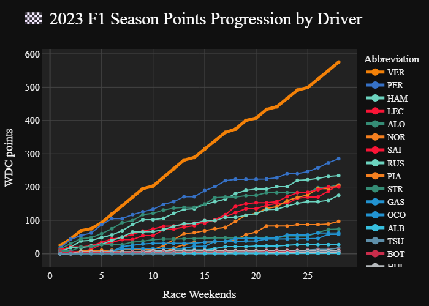

%%timeit
session = fastf1.get_session(2023, 'Singapore', 'Race')
session.load()
session_results = session.results.reset_index(drop=True)Between Races and Sprints there have been over 1162 competitive sessions in Formula 1 over its 75 year history as of September 18th, 2025. And I want to pull them ALL to answer create my own custom scoring system app. But when you need to make so many api calls, optimizing the code is essential.
For all of the data in this notebook we’ll be using the 2023 Singapore Grand Prix Race. Why? Because it was the first race I ever watched live!
Optimizations
The Original Code:
%%timeit
import numpy as np
import pandas as pd
import fastf1
# Pulling from fastf1
session = fastf1.get_session(2023, 'Singapore', 'Race')
session.load()
session_results = session.results.reset_index(drop=True)
# adding columns
session_results["Season"] = 2023
session_results["Location"] = 'Singapore'
session_results["SessionType"] = 'Race'
# Get all laps in the session
try:
laps = session.laps
fastest_lap = laps.pick_fastest()
fastest_lap.reset_index(drop=True)
# Add a 'FastestLap' column to session_results, set True for the fastest lap driver, False otherwise
fastest_driver = fastest_lap["Driver"]
session_results["got_fastest_lap"] = (
session_results["Abbreviation"] == fastest_driver
)
except Exception as e:
print(f"Error occurred while processing laps: {e}")
session_results["got_fastest_lap"] = np.nan # Default to NaN if there's an error2.35 s ± 11.1 ms per loop (mean ± std. dev. of 7 runs, 1 loop each)
2.35 seconds sounds ok, but when done over all 1162 sessions it takes over 45 minutes! Luckily, I only need to do it once but I still think improving it is worth while.
Pulling from fastf1
2.35 s ± 10 ms per loop (mean ± std. dev. of 7 runs, 1 loop each)
Obviously, the pulling from the database is what probably takes the most time. But we don’t actually need all of the data its sending us. It’s sending us telemetry data, weather, etc. when all we want are the final drivers results and who had the fastest lap.
%%timeit
session = fastf1.get_session(2023, 'Singapore', 'Race')
session.load(telemetry=False, weather=False, messages=False)
session_results = session.results.reset_index(drop=True)851 ms ± 5.51 ms per loop (mean ± std. dev. of 7 runs, 1 loop each)
That alone made puling the data 2.76x faster!
Another test I conducted was seeing inputing location vs. round number has an effect.
%%timeit
session = fastf1.get_session(2023, 'Singapore', 'Race')
session.load(telemetry=False, weather=False, messages=False)
session_results = session.results.reset_index(drop=True)898 ms ± 17.5 ms per loop (mean ± std. dev. of 7 runs, 1 loop each)
Surprisingly, it did but not the way I meant. So sticking to location is better, plus its easier for us mere mortals to keep track of.
Adding Columns
Admittedly, Location already comes with the data pulls but Season and SessionType would need to be added anyway. Plus this way its easy to know exactly what was used to pull the session.
%%timeit
session_results["Season"] = 2023
session_results["Location"] = 'Singapore'
session_results["SessionType"] = 'Race'43 μs ± 429 ns per loop (mean ± std. dev. of 7 runs, 10,000 loops each)
This step obviously isn’t where the time loss is, but curiosity drew me to testing a few other methods of column creation with the pulls.
Using the pulls in the code is necessary because some of these methods don’t play well without defining session_results inside of %%timeit
- Direct Assignment
%%timeit
session = fastf1.get_session(2023, 'Singapore', 'Race')
session.load(telemetry=False, weather=False, messages=False)
session_results = session.results.reset_index(drop=True)
session_results["Season"] = 2023
session_results["Location"] = 'Singapore'
session_results["SessionType"] = 'Race'838 ms ± 2.74 ms per loop (mean ± std. dev. of 7 runs, 1 loop each)
- Creating Multiple Columns
%%timeit
session = fastf1.get_session(2023, 'Singapore', 'Race')
session.load(telemetry=False, weather=False, messages=False)
session_results = session.results.reset_index(drop=True)
session_results[["Season", "Location", "SessionType"]] = 2023, 'Singapore', 'Race'848 ms ± 9.01 ms per loop (mean ± std. dev. of 7 runs, 1 loop each)
- Using
assign()(this returns a new dataframe, not ideal)
%%timeit
session = fastf1.get_session(2023, 'Singapore', 'Race')
session.load(telemetry=False, weather=False, messages=False)
session_results = session.results.reset_index(drop=True).assign(
Season=2023,
Location='Singapore',
SessionType='Race'
)847 ms ± 7.3 ms per loop (mean ± std. dev. of 7 runs, 1 loop each)
- Using
insert()(use this for column order)
%%timeit
session = fastf1.get_session(2023, 'Singapore', 'Race')
session.load(telemetry=False, weather=False, messages=False)
session_results = session.results.reset_index(drop=True)
session_results.insert(0, "Season", 2023)
session_results.insert(1, "Location", 'Singapore')
session_results.insert(2, "SessionType", 'Race')862 ms ± 12.6 ms per loop (mean ± std. dev. of 7 runs, 1 loop each)
The Podium for this competition goes
- Direct assignment
838 ms - Using assign()
847 ms - Multiple Columns
848 ms - Using insert()
862 ms
Fastest Lap
fastest_lap = session.laps.pick_fastest()
fastest_lapFor my custom points system, I only need to know WHO did the fastest lap. So whoever got the fastest lap is True and the rest are marked False. Unfortunatly, only the most recent seasons have this data and it will error if its unavailable, so we set those to NA. But for these timed test we’ll just do the ‘try’ section.
%%timeit
session = fastf1.get_session(2023, 'Singapore', 'Race')
session.load(telemetry=False, weather=False, messages=False)
session_results = session.results.reset_index(drop=True)
# FASTEST LAP
laps = session.laps
fastest_lap = laps.pick_fastest()
fastest_lap.reset_index(drop=True)
# Add a 'FastestLap' column to session_results, set True for the fastest lap driver, False otherwise
fastest_driver = fastest_lap["Driver"]
session_results["got_fastest_lap"] = (
session_results["Abbreviation"] == fastest_driver
)949 ms ± 29.8 ms per loop (mean ± std. dev. of 7 runs, 1 loop each)
This code eliminates the fastest_lap dataframe and only saves what we truly need which is who set the fastest lap. In this case, “HAM” aka Lewis Hamilton.
%%timeit
session = fastf1.get_session(2023, "Singapore", "Race")
session.load(telemetry=False, weather=False, messages=False)
session_results = session.results.reset_index(drop=True)
# FASTEST LAP
fastest_driver = session.laps.pick_fastest()["Driver"]
session_results["got_fastest_lap"] = session_results["Abbreviation"] == fastest_driver904 ms ± 3.47 ms per loop (mean ± std. dev. of 7 runs, 1 loop each)
This gives us not only a lower overall time but also lowers the variance from 30 ms to 3.5 ms - nearly 10x less.
Final Code
%%timeit
session = fastf1.get_session(2023, "Singapore", "Race")
# Only Pull Data We Want
session.load(telemetry=False, weather=False, messages=False)
session_results = session.results.reset_index(drop=True)
# Direct Assign Columns
session_results["Season"] = 2023
session_results["Location"] = 'Singapore'
session_results["SessionType"] = 'Race'
# Fastest lap calculation (minimal lines, no extra DataFrame copies)
try:
fastest_driver = session.laps.pick_fastest()["Driver"]
session_results["got_fastest_lap"] = session_results["Abbreviation"] == fastest_driver
except Exception as e:
print(f"Error occurred while processing laps: {e}")
session_results["got_fastest_lap"] = np.nan # Default to NaN if there's an error900 ms ± 11.3 ms per loop (mean ± std. dev. of 7 runs, 1 loop each)
900 ms is 2.6x FASTER than the 2.35s it was in the beginning! This brings us down from 45.5 minutes to pull all 1162 sessions to just 17.5 minutes!
Application & ETL
Now the bit I’ve been ignoring this whole time - FastF1 is rate limited, meaning you can only pull so much so fast anyway. But this is a good exercise to practice optimizing my code and seeing where the holes are. For my ETL class I’ve made a function called pull_session_results that will be used to continually update the database as races happen.
def pull_session_results(season, location, session_type): # in class 'self' is first arg ;)
"""Pull the results for a specific season, location, and session type
Args:
season (int): Season year (e.g. 1950, 2025)
location (str): Location (e.g. "Singapore", "Monza", "Silverstone")
session_type (str, optional): Session type (e.g., "Race", "Sprint", "Qualifying")
Returns:
pd.DataFrame: DataFrame containing session results
"""
session = fastf1.get_session(season, location, session_type)
# Only Pull Data We Want
session.load(telemetry=False, weather=False, messages=False)
session_results = session.results.reset_index(drop=True)
# Direct Assign Columns
session_results["Season"] = season
session_results["Location"] = location
session_results["SessionType"] = session_type
# Fastest lap calculation (minimal lines, no extra DataFrame copies)
try:
fastest_driver = session.laps.pick_fastest()["Driver"]
session_results["got_fastest_lap"] = session_results["Abbreviation"] == fastest_driver
except Exception as e:
print(f"Error occurred while processing laps: {e}")
session_results["got_fastest_lap"] = np.nan # Default to NaN if there's an error
return session_resultsTo pull all 28 sprints and races from the 2023 season only took 22.23 seconds, or roughly 0.8s/800ms each, even faster than expected.
Show the code
import pandas as pd
import plotly.express as px
final_results_df = pd.read_parquet(r"C:\Users\User\OneDrive\Desktop\Blog\allisonbday.github.io\posts\Projects\F1Streamlit\1_optimize_code\data\f1_session_results_2023.parquet")
# Assign session order based on sorted unique sessions
session_order_df = (
final_results_df
.sort_values(["RoundNumber", "SessionType"], ascending=[True, False])
.drop_duplicates(subset=["Location", "SessionType"])
)
session_order_df["session_order"] = range(1, len(session_order_df) + 1)
# Merge session order back to main DataFrame
final_results_df = final_results_df.merge(
session_order_df[["Location", "SessionType", "session_order"]],
on=["Location", "SessionType"],
how="left"
).sort_values(["session_order", "Position"])
# Format team color and calculate cumulative points
final_results_df["TeamColor"] = "#" + final_results_df["TeamColor"]
final_results_df["points_earned"] = final_results_df.groupby("Abbreviation")['Points'].cumsum()
fig = px.line(
final_results_df,
x="session_order",
y="points_earned",
color="Abbreviation",
line_group="Season",
title="🏁 2023 F1 Season Points Progression by Driver",
markers=True,
labels={"points_earned": "WDC points", "session_order": "Race Weekends"},
color_discrete_map=final_results_df.set_index("Abbreviation")["TeamColor"].to_dict(),
hover_data=["FullName", "EventName", "SessionType"]
)
fig.for_each_trace(
lambda t: t.update(line=dict(color="#F38108", width=5)) if t.name == "VER" else None
)
# Reorder legend and line order by final points per driver (descending)
final_points = (
final_results_df.groupby("Abbreviation")["points_earned"]
.max()
.sort_values(ascending=False)
)
fig.update_traces(
selector=dict(type="scatter"),
overwrite=False
)
# Reorder traces by final points per driver (descending)
ordered_traces = []
trace_names = [trace.name for trace in fig.data]
for driver in final_points.index:
if driver in trace_names:
idx = trace_names.index(driver)
ordered_traces.append(fig.data[idx])
fig.data = tuple(ordered_traces)
fig.update_layout(
plot_bgcolor="#222222",
paper_bgcolor="#101010",
font=dict(family="Formula1", color="#F1F1F1", size=16),
legend_traceorder="reversed",
legend=dict(
traceorder="normal",
itemsizing="constant",
# bgcolor="#181818",
bordercolor=None, # Remove border
borderwidth=0, # Remove border
font=dict(color="#F1F1F1", size=14)
),
title_font=dict(family="Formula1", color="#FFFFFF", size=28),
xaxis=dict(
gridcolor="#444444",
zerolinecolor="#444444",
linecolor="#F1F1F1",
tickfont=dict(color="#F1F1F1"),
title_font=dict(color="#F1F1F1")
),
yaxis=dict(
gridcolor="#444444",
zerolinecolor="#444444",
linecolor="#F1F1F1",
tickfont=dict(color="#F1F1F1"),
title_font=dict(color="#F1F1F1")
),
margin=dict(l=40, r=40, t=80, b=40)
)
fig.update_layout(height=800)
fig.show(renderer="png")